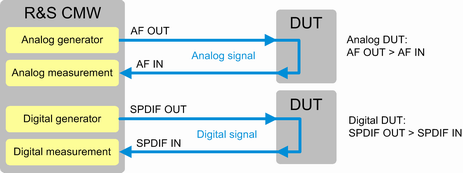
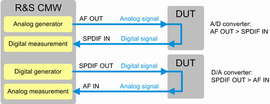

The scenario "Audio Measurement and Generator" involves both an audio generator and an audio measurement. The generator provides an audio signal at an AF OUT or SPDIF OUT connector. The signal is routed to the DUT, passes the DUT and is routed back to an AF IN or SPDIF IN connector. Then the signal is analyzed via the audio measurement. The generator and the measurement are coupled, so that the measurement knows the generator settings and thus the properties of the generated signal.
A typical use case is the analysis of the frequency response of an amplifier.

You can freely combine analog and digital applications. You can, for example, couple an analog generator and a digital measurement to test an A/D converter, or vice versa to test a D/A converter.

Single tone measurements can also be performed without using the audio generator. In that case only an audio connection from the DUT to an AF IN or SPDIF IN connector is required.